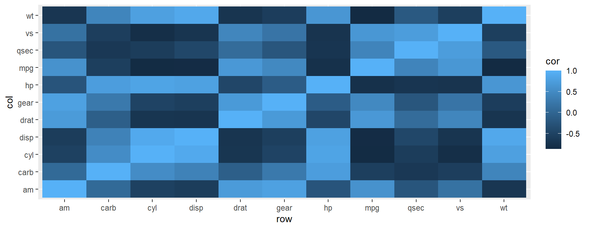

ggplot(data, aes(mappings)) +
geom_function()Week 3: Data Visualization
{ggplot2}
Housekeeping
- Homework 1 due today
- Groups due today
- I need emails from everyone by 5pm (if you have not already emailed)
Data Visualization with {ggplot2}
Week 3
Agenda
{ggplot2}
- syntax
- continuous data visualizations
- categorical data visualizations
- options
- color/fill
- transparency
- labels
- facets
Learning Objectives
- Understand the basic syntax requirements for
{ggplot2} - Recognize various options for displaying continuous and categorical data
- Familiarity with various
{ggplot2}options- color/fill
- transparency
- labels
- facets
Share!
{datapasta}
- Copy and paste data to and from
R - VERY handy!
- Good for reprex
- posting questions on Rstudio Community or stackoverflow
demo

Credit Allison Horst
Providing grammar for:
- Graphics
{ggplot2}
- Data manipulations
{dplyr}{tidyr}
- Expanding area of specialized topics
{lubridate}{glue}{tidymodels}
- Many more…
Providing grammar for:
- Graphics
{ggplot2}
- Data manipulations
{dplyr}{tidyr}
- Expanding area of specialized topics
{lubridate}{glue}{tidymodels}
- Many more…
{ggplot2}
The {ggplot2} package
gg stands for the “grammar of graphics”


Resources
The {ggplot2} package is one of the most popular R packages, and there are many resources to learn the syntax
- ggplot2 book (email me for digital copy)
- Posit cheat sheet
- Can be helpful, perhaps more so after a little experience
- R Graphics Cookbook
- R Graph Gallery
- past students have really liked this one
Components
Every ggplot plot has three components
- data
- the
dataused to produce the plot
- the
- aesthetic mappings (
aes)- between variables and visual properties
- layer(s)
- usually through the
geom_*()function to produce geometric shapes to be rendered
- usually through the
. . .
ggplot() always takes a data frame (tibble) as the first argument
Basic syntax
ggplot(data, aes(x = xvar, y = yvar)) +
geom_function()
. . .
ggplot() = the function is ggplot and the package is {ggplot2}
. . .
data = the data to be plotted
. . .
aes(x = xvar, y = yvar) = the aesthetic mappings
. . .
geom_function() = the geometrics of the plot; the “function()” here represents any of the geom_* offerings
. . .
note the + and NOT the %>%
{ggplot2} template
. . .
or equivalently
. . .
data %>%
ggplot(aes(mappings)) +
geom_function()Some data for today 
run the following
library(tidyverse)
library(palmerpenguins)
head(penguins)# A tibble: 6 × 8
species island bill_length_mm bill_depth_mm flipper_length_mm body_mass_g
<fct> <fct> <dbl> <dbl> <int> <int>
1 Adelie Torgersen 39.1 18.7 181 3750
2 Adelie Torgersen 39.5 17.4 186 3800
3 Adelie Torgersen 40.3 18 195 3250
4 Adelie Torgersen NA NA NA NA
5 Adelie Torgersen 36.7 19.3 193 3450
6 Adelie Torgersen 39.3 20.6 190 3650
# ℹ 2 more variables: sex <fct>, year <int>Continuous Data
Setting up a plot
Run the following code. What do you see?
ggplot(penguins, aes(bill_length_mm, body_mass_g)) Setting up a plot
We have to add some layers!

Setting up a plot
It’s ready for you to add some geometric layers…what should we add?
How about points?
Adding layers
- In the previous slide, we added a layer of points
- The
geom_point()layer is a function, complete with it’s own arguments
. . .
Let’s change the color of the points
How would you change the color of the points?
orHow would you find out about changing the color of the points?
. . .
?geom_point
color
Add another layer
Let’s add a smoothed line with geom_smooth()
Add another layer
Let’s add a smoothed line with geom_smooth()
Note: This is not the same as geom_line(). We are fitting a line of best fit with geom_smooth()
You try
You probably got the message below when you ran (defaults)
ggplot(penguins, aes(bill_length_mm, body_mass_g)) +
geom_point(color = "magenta") +
geom_smooth()`geom_smooth()` using method = 'loess' and formula = 'y ~ x'
. . .
Change the method to "lm"
Let’s do this one together
Look at the help page – ?geom_smooth
Remove the
confidenceinterval around the lineNow change the
*SE*band to reflect a 68% confidence interval
color: global vs. conditional
Prior examples changed colors globally
geom_point(color = "magenta")
. . .
Use aes() to access variables, and color according to a specific variable
. . .
- We use variable names within
aes()
. . .
Let’s check the data again (head()) and the “species” variable (table())
. . .
let’s do this together
color: global vs. conditional
ggplot(penguins, aes(bill_length_mm, body_mass_g)) +
geom_point(aes(color = species))- When we did
geom_point(color = "magenta")we put quotes around the color - Why now is “species” not in quotes?
. . .
- color names/hex codes are in quotes NOT in the
aes() - variable names are in the
aes()NOT in quotes aes()is where you map to your data!
Conditional flow through layers
If we use something like color = “x” in the first aesthetic, it will carry on through all additional layers
These two codes are the same:
ggplot(penguins, aes(bill_length_mm, body_mass_g)) +
geom_point(aes(color = species))ggplot(penguins, aes(bill_length_mm, body_mass_g, color = species)) +
geom_point(). . .
But these two are not…why? run to find out
ggplot(penguins, aes(bill_length_mm, body_mass_g)) +
geom_point(aes(color = species)) +
geom_smooth()ggplot(penguins, aes(bill_length_mm, body_mass_g, color = species)) +
geom_point() +
geom_smooth()Be mindful with aes()
Using aes() when you don’t need it
What is happening here?
ggplot(penguins, aes(bill_length_mm, body_mass_g)) +
geom_point(aes(color = "blue")) +
geom_smooth()Be mindful with aes()
Not using aes() when you need it
What is happening here?
ggplot(penguins, aes(bill_length_mm, body_mass_g)) +
geom_point(color = species) +
geom_smooth()Error in list2(na.rm = na.rm, ...): object 'species' not foundKind of helpful message here.
Themes
Let’s talk themes
- The default is
theme_gray()- I don’t like it
- But there are a lot of build-in alternative in
{ggplot2}theme_minimal()is my favorite
- Check out the
{ggthemes}package for a lot of alternatives- These days I often use the
colorblindtheme for discrete values in my plots
- These days I often use the
- Check out the
{ggthemeassist}add-in
More themes
- The
{hrbrthemes}are nice - Consider building your own theme!
- Or Google around
. . .
- Set the theme globally
- One of the first lines in your .qmd file (after you load packages) could be:
theme_set(theme_minimal())
Get a little fancy
- You can use
geom_point()for more than one layer - You can also use a different data source on a layer
- Use these two properties to highlight points
- How about penguins from Torgersen Island?
ggplot(penguins, aes(bill_length_mm, body_mass_g)) +
geom_point(color = "black")
Another option
{gghighlight} varying flexibility
Line plots
- When should you use line plots instead of smooths?
. . .
+ usually when time is involved. . .
- What are some good candidate data for line plots?
. . .
+ observed versus model-implied (estimated)geom_line()
Classic time series example
economics data from {ggplot2}
economics# A tibble: 574 × 6
date pce pop psavert uempmed unemploy
<date> <dbl> <dbl> <dbl> <dbl> <dbl>
1 1967-07-01 507. 198712 12.6 4.5 2944
2 1967-08-01 510. 198911 12.6 4.7 2945
3 1967-09-01 516. 199113 11.9 4.6 2958
4 1967-10-01 512. 199311 12.9 4.9 3143
5 1967-11-01 517. 199498 12.8 4.7 3066
6 1967-12-01 525. 199657 11.8 4.8 3018
7 1968-01-01 531. 199808 11.7 5.1 2878
8 1968-02-01 534. 199920 12.3 4.5 3001
9 1968-03-01 544. 200056 11.7 4.1 2877
10 1968-04-01 544 200208 12.3 4.6 2709
# ℹ 564 more rowsLet’s try it
How do you think we’d fit a line plot to these data, showing unemployment (“unemploy”) over time?
. . .
ggplot(economics, aes(date, unemploy)) +
geom_line()
Layers
What happens when we layer geom_line and geom_point?
ggplot(economics, aes(date, unemploy)) +
geom_line() +
geom_point()try it!
. . .
Not the best instance of this
It would work better on a plot with fewer time points, but you get the idea
Labels
labs()
Axis Labels
Title
Subtitle
Caption
Tag
Legend (one way)
Facets
Faceting
One of the most powerful features of
{ggplot2}Produce n plots by a specific variable
facet_wrap()- wrap a sequence of panels into two dimensions
- based on variables(s)
Faceting
Careful about the ~
ggplot(penguins, aes(bill_length_mm, body_mass_g)) +
geom_point() +
geom_smooth() +
facet_wrap(species)Error in validate_facets(x): object 'species' not foundFaceting
two variables (like a matrix)
Alternative specification - vars()
Heatmaps
A heatmap is a literal way of visualizing a table of numbers, where you substitute the numbers with colored cells.
- Nathan Yau
- Useful for finding highs and lows - and sometimes patterns
- They don’t always work well
Example with correlations
corr <- cor(mtcars)
pc <- corr %>%
as.data.frame() %>%
mutate(row = rownames(.)) %>%
pivot_longer(
cols = -row,
names_to = "col",
values_to = "cor"
)
head(pc)# A tibble: 6 × 3
row col cor
<chr> <chr> <dbl>
1 mpg mpg 1
2 mpg cyl -0.852
3 mpg disp -0.848
4 mpg hp -0.776
5 mpg drat 0.681
6 mpg wt -0.868Heatmap
ggplot(pc, aes(row, col, fill = cor)) +
geom_tile()
Viridis
Categorical Data
Data
{fivethirtyeight} package
dataset is college_grad_students
theme_set(theme_minimal(base_size = 16))
#install.packages("fivethirtyeight")
library(fivethirtyeight)
# View(college_grad_students)
grad <- college_grad_students # simpler reference
grad# A tibble: 173 × 22
major_code major major_category grad_total grad_sample_size grad_employed
<int> <chr> <chr> <int> <int> <int>
1 5601 Construc… Industrial Ar… 9173 200 7098
2 6004 Commerci… Arts 53864 882 40492
3 6211 Hospital… Business 24417 437 18368
4 2201 Cosmetol… Industrial Ar… 5411 72 3590
5 2001 Communic… Computers & M… 9109 171 7512
6 3201 Court Re… Law & Public … 1542 22 1008
7 6206 Marketin… Business 190996 3738 151570
8 1101 Agricult… Agriculture &… 17488 386 13104
9 2101 Computer… Computers & M… 5611 98 4716
10 1904 Advertis… Communication… 33928 688 28517
# ℹ 163 more rows
# ℹ 16 more variables: grad_employed_fulltime_yearround <int>,
# grad_unemployed <int>, grad_unemployment_rate <dbl>, grad_p25th <dbl>,
# grad_median <dbl>, grad_p75th <int>, nongrad_total <int>,
# nongrad_employed <int>, nongrad_employed_fulltime_yearround <int>,
# nongrad_unemployed <int>, nongrad_unemployment_rate <dbl>,
# nongrad_p25th <dbl>, nongrad_median <dbl>, nongrad_p75th <dbl>, …Histogram
Histogram of “grad_total”
ggplot(grad, aes(x = grad_total)) +
geom_histogram()
Transparency - alpha
Add some transparency – perhaps this looks nicer

color vs. fill
In general
colordefines the color a geom is outlinedfilldefines the color a geom is filled
color vs. fill
For example:
geom_point()default has only has a color and NO fill because they’re just points- Point shapes 21–24 include both a color and a fill
How would we change the color of this plot?
ggplot(grad, aes(x = grad_total)) +
geom_histogram(alpha = 0.7)How would we change the color of this plot?
ggplot(grad, aes(x = grad_total)) +
geom_histogram(alpha = 0.7, color = "magenta")
How would we change the color fill of this plot?
. . .
ggplot(grad, aes(x = grad_total)) +
geom_histogram(alpha = 0.7, fill = "magenta")
Color by variable
What if we wanted different colors by a variable – major_category
ggplot(grad, aes(x = grad_total)) +
geom_histogram(aes(fill = major_category), alpha = 0.7)Density plot
Alternative representation of distribution
- Think of it as a smoothed histogram (uses kernel smoothing)
- The depiction of the distribution is NOT determined by the number of the bins you use, as are histograms
Density plot
geom_density()
ggplot(grad, aes(x = grad_total)) +
geom_density()Density plot
Now let’s fill by major_category
ggplot(grad, aes(x = grad_total)) +
geom_density(aes(fill = major_category), alpha = 0.2)Not a good plot, just an example
Possible alternative? facet_wrap
ggplot(grad, aes(x = grad_total)) +
geom_density(alpha = 0.2) +
facet_wrap(~major_category) #<<Even better
density ridges {ggridges}
library(ggridges)
ggplot(grad, aes(x = grad_total, y = major_category)) +
geom_density_ridges()Density Ridges
ggplot(penguins, aes(bill_length_mm , species)) +
geom_density_ridges()fill
Add transparency for clarity

Viridis
- easier to read by those with colorblindness
- prints well in gray scale
Same fill function, different “option”
Candy rankings {fivethirtyeight}
candy <- candy_rankings %>%
pivot_longer(
cols = chocolate:pluribus,
names_to = "type",
values_to = "foo") %>%
filter(foo) %>%
select(-foo)
candy# A tibble: 197 × 5
competitorname sugarpercent pricepercent winpercent type
<chr> <dbl> <dbl> <dbl> <chr>
1 100 Grand 0.732 0.860 67.0 chocolate
2 100 Grand 0.732 0.860 67.0 caramel
3 100 Grand 0.732 0.860 67.0 crispedricewafer
4 100 Grand 0.732 0.860 67.0 bar
5 3 Musketeers 0.604 0.511 67.6 chocolate
6 3 Musketeers 0.604 0.511 67.6 nougat
7 3 Musketeers 0.604 0.511 67.6 bar
8 Air Heads 0.906 0.511 52.3 fruity
9 Almond Joy 0.465 0.767 50.3 chocolate
10 Almond Joy 0.465 0.767 50.3 peanutyalmondy
# ℹ 187 more rowsBoxplot
ggplot(candy, aes(type, sugarpercent)) +
geom_boxplot() 
Violin plots
ggplot(candy, aes(type, sugarpercent)) +
geom_violin() Bar Charts
head(mpg)# A tibble: 6 × 11
manufacturer model displ year cyl trans drv cty hwy fl class
<chr> <chr> <dbl> <int> <int> <chr> <chr> <int> <int> <chr> <chr>
1 audi a4 1.8 1999 4 auto(l5) f 18 29 p compa…
2 audi a4 1.8 1999 4 manual(m5) f 21 29 p compa…
3 audi a4 2 2008 4 manual(m6) f 20 31 p compa…
4 audi a4 2 2008 4 auto(av) f 21 30 p compa…
5 audi a4 2.8 1999 6 auto(l5) f 16 26 p compa…
6 audi a4 2.8 1999 6 manual(m5) f 18 26 p compa…Bar/Col Charts
geom_bar()
- expects x OR y
- counts rows
- if you want to count the number of cases at each x or y position
- makes the height of the bar proportional to the number of cases in each group
- uses
stat_count()by default
geom_col()
- expects x AND y
- expects numbers in your data
- if you want the heights of the bars to represent values in the data
- leaves the data as is
- uses
stat_identity()by default
geom_bar()
mpg data
ggplot(mpg, aes(class)) + # one variable in the `aes()`
geom_bar() # counts the rows per classsummarized_mpg data
summarized_mpg <- mpg %>%
group_by(class) %>%
count()
head(summarized_mpg)# A tibble: 6 × 2
# Groups: class [6]
class n
<chr> <int>
1 2seater 5
2 compact 47
3 midsize 41
4 minivan 11
5 pickup 33
6 subcompact 35geom_col()
summarized_mpg data
ggplot(summarized_mpg, aes(class, n)) + # two variables in the `aes()`
geom_col() # data has the rows per class in "n"geom_bar() default
ggplot(mpg, aes(class)) +
geom_bar()
geom_bar(stat = "identity")
ggplot(summarized_mpg, aes(class, n)) +
geom_bar(stat = "identity")
geom_bar() default
ggplot(mpg, aes(class)) +
geom_bar()geom_col() default
ggplot(summarized_mpg, aes(class, n)) +
geom_col()geom_bar() default
ggplot(mpg, aes(class)) +
geom_bar()
geom_bar() uh-oh
ggplot(summarized_mpg, aes(class)) +
geom_bar()
What happened?
Let’s look at our data again
summarized_mpg# A tibble: 7 × 2
# Groups: class [7]
class n
<chr> <int>
1 2seater 5
2 compact 47
3 midsize 41
4 minivan 11
5 pickup 33
6 subcompact 35
7 suv 62ggplot(summarized_mpg, aes(class)) +
geom_bar()
Change the order of the x-axis
- We’ll talk about betters methods for this when we talk about
factorsin Week 9 - Basically - define x-axis variable as a
factorwith levels in the order you want
. . .
(mean_hmiles <- mpg %>%
group_by(class) %>%
summarize(mean_hwy = mean(hwy)))# A tibble: 7 × 2
class mean_hwy
<chr> <dbl>
1 2seater 24.8
2 compact 28.3
3 midsize 27.3
4 minivan 22.4
5 pickup 16.9
6 subcompact 28.1
7 suv 18.1mean_hmiles %>%
ggplot(aes(class, mean_hwy)) +
geom_col()mean_hmiles %>%
mutate(class = factor(class,
levels = c("pickup",
"suv",
"minivan",
"2seater",
"midsize",
"subcompact",
"compact"))) %>%
ggplot(aes(class, mean_hwy)) +
geom_col()More bar plot options
eclsk <- haven::read_sav(here::here("data", "ecls-k_samp.sav")) %>%
rio::characterize() %>%
janitor::clean_names()
ecls_smry <- eclsk %>%
group_by(k_type, ethnic) %>%
summarize(t1r_mean = mean(t1rscale))
ecls_smry# A tibble: 16 × 3
# Groups: k_type [2]
k_type ethnic t1r_mean
<chr> <chr> <dbl>
1 full-day AMERICAN INDIAN OR ALASKA NATIVE 17.5
2 full-day ASIAN 31.8
3 full-day BLACK OR AFRICAN AMERICAN, NON-HISPANIC 21.1
4 full-day HISPANIC, RACE NOT SPECIFIED 20.3
5 full-day HISPANIC, RACE SPECIFIED 22.3
6 full-day MORE THAN ONE RACE, NON HISPANIC 20.8
7 full-day NATIVE HAWAIIAN, OTHER PACIFIC ISLANDER 23.2
8 full-day WHITE, NON-HISPANIC 25.5
9 half-day AMERICAN INDIAN OR ALASKA NATIVE 30.0
10 half-day ASIAN 25.1
11 half-day BLACK OR AFRICAN AMERICAN, NON-HISPANIC 18.6
12 half-day HISPANIC, RACE NOT SPECIFIED 18.7
13 half-day HISPANIC, RACE SPECIFIED 20.0
14 half-day MORE THAN ONE RACE, NON HISPANIC 20.3
15 half-day NATIVE HAWAIIAN, OTHER PACIFIC ISLANDER 19.7
16 half-day WHITE, NON-HISPANIC 23.7Stacked bar plot
Look for effects in “ethnicity” by “k_type” (full/half day K)
ggplot(ecls_smry, aes(ethnic, t1r_mean)) +
geom_col(aes(fill = k_type))
Grouped bar plot

Rotating Labels
I have to look this up every time

Flip the coordinates
coord_flip()

Alternatively
facet_wrap()
ggplot(ecls_smry, aes(k_type, t1r_mean)) +
geom_col(alpha = 0.8) +
facet_wrap(~ethnic)
Sometimes some redundancy works well
ggplot(ecls_smry, aes(k_type, t1r_mean, fill = k_type)) +
geom_col(alpha = 0.8) +
facet_wrap(~ethnic)
geom_*() Review
geom_point()geom_smooth()geom_line()geom_tile()geom_histogram()geom_density()ggridges::geom_density_ridges()geom_boxplot()geom_violin()geom_bar()geom_col()
Challenge
- Start a new
Rproject - Create a new script, save it as “practice-plots.R”
- Load the
{tidyverse} - Print the msleep dataset to see it’s structure (it’s from
{ggplot2})
For each of the following, produce a separate plot
- Plot the relation between “sleep_total” and “brainwt” (with “brainwt” as the DV) - scatter plot
- Overlay a smooth on the previous plot
- Color the points by “vore”, but fit a single smooth
- Fit separate smooths by “vore”, but with all points being gray
- Omit the standard error of the smooths
- Use
ylim()as an additional layer to restrict the y-axis to range from 0 to 5
Next time
Before next class
- Reading
- Supplemental Learning
- Homework
- Homework 2
- Homework 3